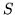
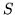

 number of streams
number of states in the 'th model in a training sequence
the observation vector for stream
covariance matrix for the mixture component
For reference purposes, this section lists the various formulae employed within the HTK parameter estimation tools. All are standard, however, the use of non-emitting states and multiple data streams leads to various special cases which are usually not covered fully in the literature.
The following notation is used in this section
number of states
 number of streamsnumber of mixture components in stream

number of observations
number of models in an embedded training sequence
number of states in the 'th model in a training sequence
a sequence of observations
the observation at time
,

the observation vector for streamthe probability of a transition from state
to

weight of mixture component
in state
vector of means for the mixture component
covariance matrix for the mixture componentthe set of all parameters defining a HMM